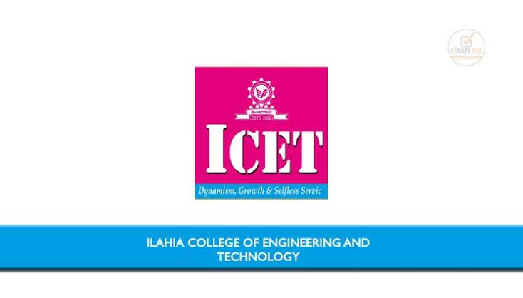

Ilahia College of Engineering and Technology (ICET) is a prominent self-financing technical institution established in 2002 in Mulavoor, Muvattupuzha, Kerala. Managed by the Ilahia Trust, the college is approved by the AICTE and affiliated with APJ Abdul Kalam Kerala Technological University (KTU). ICET offers a comprehensive range of undergraduate (B.Tech) engineering programs alongside professional postgraduate degrees like MBA and MCA. Known for its modern infrastructure, state-of-the-art labs, and active placement cell, the institution focuses on delivering quality technical education while fostering a strong sense of social commitment.